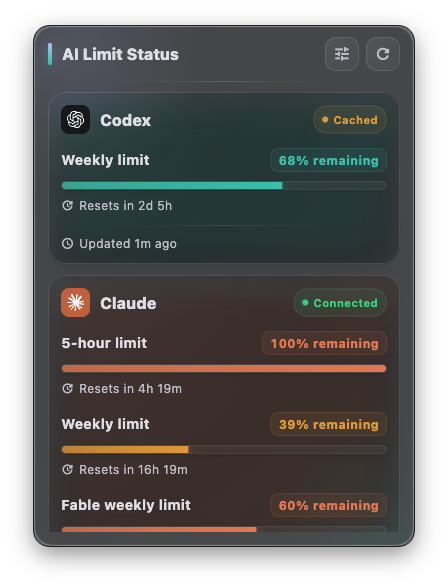

Know what’s left before you run out.
Local time
Desktop alerts at 50%, 20% and 10% remaining, and before each reset.
Codex and Claude usage limits, always in your macOS menu bar or Windows taskbar. Free and open source. Board shows sample numbers; the app shows yours.
brew install --cask farhans-codes/tap/ai-limit-status
How it works
-
1
Install for your platform
Download the DMG for macOS or the installer for Windows. After that, updates install in one click from Settings.
-
2
Use the sign-in you already have
If
claudeorcodex loginworks in your terminal, you’re done. AI Limit Status reads that sign-in. No API key, no extra account. -
3
Glance, don’t check
The remaining percentage sits next to the clock. Open it for every limit, model-specific Claude limits included, and the exact local time each one resets.
On the platform

Mac and Windows.
On macOS the numbers live in the menu bar. On Windows they sit on the taskbar, next to the system tray (still marked experimental). Same popover, same alerts, on both.
Most tools like this are macOS-only. This one isn’t.
Service notes
- Alerts before you hit the wall
- Desktop notifications at 50%, 20% and 10% remaining, plus reminders a day, 12 hours, 5 hours and 1 hour before a reset.
- Every limit, not just one
- Codex weekly, Claude weekly and model-specific weekly limits, and Antigravity’s weekly and five-hour limits, each with its own reset time.
- Honest about freshness
- Every card says when it was updated. If a provider can’t be reached, you see the last known number, marked as cached.
- One-click updates
- New versions show a dot on Settings and install themselves when you say so.
- Only what you use
- Turn off any provider and it is never read. Or keep its card and just take it out of the menu bar.
- More providers, built in the open
- Codex, Claude and Antigravity work today. Cursor, Copilot, Gemini and others are planned, and you can add the one you use: a provider is one small file.
- Nothing leaves your machine
- No analytics, no telemetry, no account. MIT-licensed and open source.
Questions
How do I check my Claude Code usage limit?
Install AI Limit Status and sign in to Claude Code once with claude. The remaining weekly limit, and any model-specific weekly limit, appears in the menu bar or taskbar, with the exact reset time in the popover.
How do I see how much of my Codex weekly limit is left?
Sign in to the Codex CLI with codex login. AI Limit Status shows the remaining percentage of the Codex weekly limit and when it resets, next to Claude if you use both.
Is there a CodexBar alternative for Windows?
Yes. AI Limit Status runs on both macOS and Windows and shows Codex and Claude side by side. CodexBar, a similar menu bar tool, is macOS-only.
Which AI tools does it support?
Codex, Claude and Antigravity today. Antigravity is read while its app is open. Other tools are planned, and because the project is open source, anyone who uses one can contribute it by following the provider guide.
Does it need an API key or send my data anywhere?
No. It reuses the sign-in your Claude Code and Codex CLIs already created, asks the providers for your usage directly, and has no analytics or telemetry.
macOS says the app can’t be opened. What now?
The app isn’t notarized by Apple yet. Open it once from System Settings → Privacy & Security → Open Anyway. After that it opens normally.